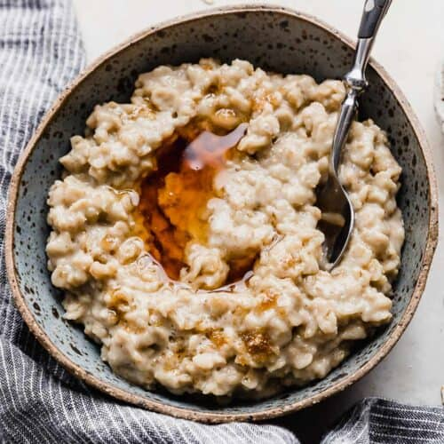

Oatmeal

Description
A warm, nutritious breakfast of oats cooked in water or milk,
sweetened with honey and spiced with cinnamon.
Ingredients
- 1 cup oats
- 2 cups water or milk
- Honey
- Cinnamon
Steps
- Combine oats and water or milk in a pot.
- Bring to a simmer over medium heat, stirring occasionally.
- Cook for 5-10 minutes until oats are soft.
- Drizzle honey and sprinkle cinnamon on top.
- Serve warm.
Home